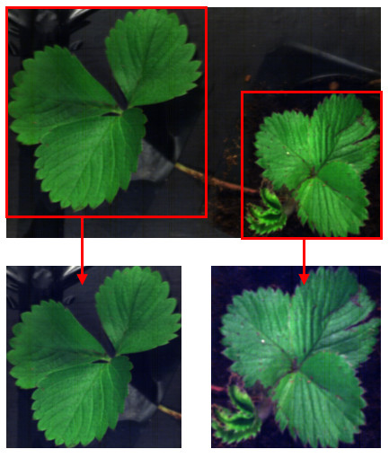
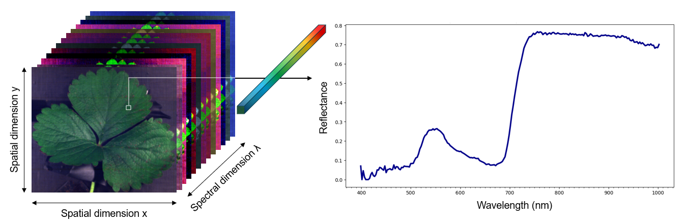
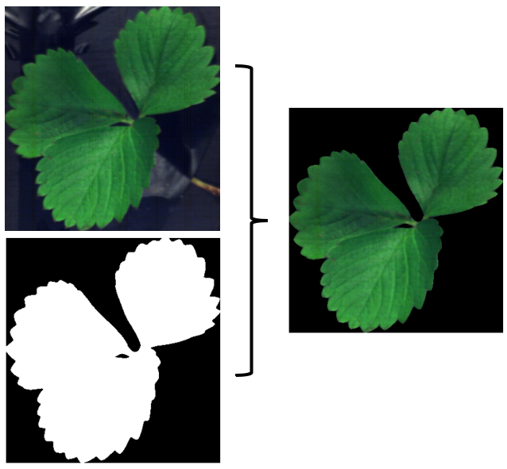
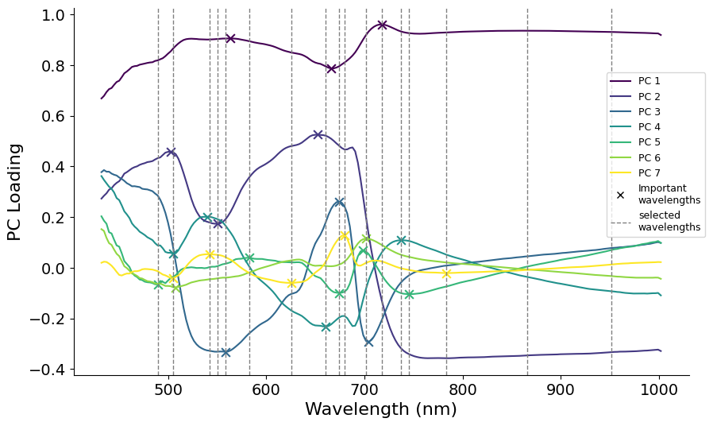

Exploring Fully Unsupervised Autoencoders for Early Disease Detection
Hyperspectral imaging of strawberry leaves to detect P. cactorum—no labels,
anomaly detection via reconstruction error.
Core Idea
Use hyperspectral images (≈398–1000 nm) of strawberry leaves; train only on healthy leaves; flag anomalies via reconstruction errors from convolutional autoencoders (2D & 3D).

Cropped leaves from plant image.

Example of hyperspectral leaf image and its spectra.
Preprocessing: mask background; remove noisy bands (<430 nm); SNV normalization; PCA-guided band selection to 17 wavelengths (also compared with full spectrum).

Masked image.

Selected bands based on PCA loadings and spectral data exploration.
Method
Train 3D Convolutional Autoencoder on healthy leaves; evaluate infection by image-level reconstruction error with thresholds; metrics: ROC-AUC, PR-AUC, FPR@95%TPR.
Per-band extreme-error pixel: Own idea, using the rate of all pixels with error values above the 99% quantile of the validation set (only healthy leaves) over all pixels to identify diseases.
Vein-focused errors: Original idea based on the disease spread in the plant, as it often progresses through the veins. Veins and proximate areas are idenfied
using the highest eigenvalues. The mean absolute error of Taking inspiration from this, veins are separated from the rest of the plant, identifying only
errors occurring in the veins and their direct proximity and dividing them by the
pixels of this area..
Visualization of 3D Convoluational Autoencoder.Slot for a hyperspectral leaf image (false-color or RGB).
Key Findings
Fully unsupervised CAEs struggled to cleanly separate healthy vs infected leaves—especially in early stages; best conventional setup reached modest ROC-AUC, and 3D did not clearly outperform 2D.
“Extreme-pixel” per-band metric showed most promise for day-1 infections (lowest FPR@95%TPR among tested metrics), but overall accuracy remained limited.
Reduced 17-band sets performed comparably to the full spectrum → careful band selection can cut complexity without large losses.
Takeaways
Symptoms of P. cactorum resemble benign variation (e.g., drought stress), making purely unsupervised detection intrinsically hard on this dataset.
Pipeline + preprocessing + error-metric ideas form a reusable baseline for future semi-supervised or hybrid approaches.